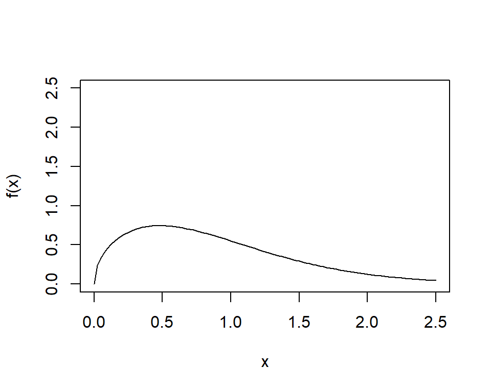

Log Normal & Weibull Distribution
Boylad · 2018-10-14
Lognormal Distribution
\(p.d.f:\) \[f_x(x)=\frac{1}{x}\cdot \frac{1}{\sigma \sqrt{2\pi}}e^{-\frac{(lnx-\mu)}{2\sigma^2}}\]
where: \(-\infty<\mu<\infty\), \(\sigma^2>0\)
Lognormal <- function(mu, sigmapower2){
if (mu < 1 & sigmapower2 > 0)
return(curve((1/sqrt(2*pi*sigmapower2))*
exp(-0.5*(log(x)-mu)^2/sigmapower2)/x,
ylab = "f(x)", xlim = c(0, 5)))
if (mu >= 1)
return(curve((1/sqrt(2*pi*sigmapower2))*
exp(-0.5*(log(x)-mu)^2/sigmapower2)/x,
ylab = "f(x)", xlim = c(0, 10)))
else
print("You have a false parameter input")
}
Lognormal(0, 1)Lognormal(1.5, 0.5)
Lognormal(0, -1)
## [1] "You have a false parameter input"
Weibull distribution
\(p.d.f:\) \[f_x(x)=\frac{k}{\lambda}\left(\frac{x}{\lambda}\right)^{k-1}e^{-(x/\lambda)^k}\]
where: \(k>0\), \(\lambda>0\)
Weibull <- function(lambda,k,x){
if (lambda > 0 & k > 0)
return(curve(k/lambda*(x/lambda)^(k-1)*exp(-(x/lambda)^k),
xlim = c(0, 2.5), ylim = c(0, 2.5),
ylab = "f(x)"))
else
print("You have a false parameter input")
}
Weibull(1, 0.5)Weibull(1, 1)Weibull(1, 1.5)
Weibull(1, 5)Weibull(1, -5)
## [1] "You have a false parameter input"